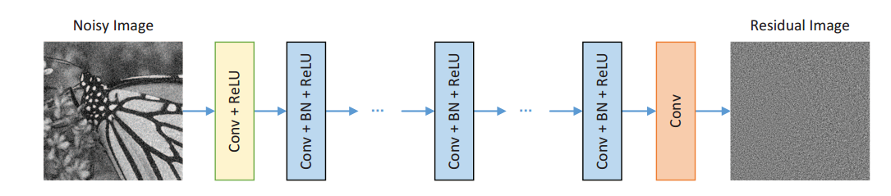

SOME PUBLISHMENTS:
- O.A. Topal, S. Gecgel, E.M. Eksioglu, G. Karabulut Kurt, “Identification of smart jammers: Learning-based approaches using wavelet preprocessing”, Physical Communication, vol. 39, April 2020. https://doi.org/10.1016/j.phycom.2020.101029
- O. Colak, E.M. Eksioglu, “Image Denoising using Patch Ordering and 3D Transformation of Patches”, IET Image Processing, vol. 13, no. 12, pp. 2636-2646, November 2019.https://doi.org/10.1049/iet-ipr.2018.6431
- E.M. Eksioglu, A. K. Tanc, “Denoising AMP for MRI Reconstruction: BM3D-AMP-MRI”, SIAM Journal on Imaging Sciences, vol. 11, no. 3, pp. 2090-2109, September 2018.Denoising AMP for MRI reconstruction: BM3D-AMP-MRI
- E.M. Eksioglu, “Decoupled Algorithm for MRI Reconstruction Using Nonlocal Block Matching Model: BM3D-MRI”, Journal of Mathematical Imaging and Vision, vol. 56, no. 3, pp. 430-440, November 2016.Decoupled Algorithm for MRI Reconstruction using Nonlocal Block Matching Model: BM3D-MRI
EQUIPMENTS
| Item | # Number | Description |
|---|---|---|
| Intel Core i9 9900 | 3X | Equipped with 6 Nvidia RTX 2080 Ti GPUs |
| Intel Core i7 8700 | 4x | Equipped with 2 Nvidia RTX 2060 SUPER GPUs |
| Intel Core i5 3070K | 1x | Equipped with 1 Nvidia GeForce GTX 1080 Ti GPU |
| Intel Core i5 3570 | 1x | Equipped with 1 Nvidia GeForce GTX 1080 Ti GPU |
